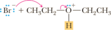
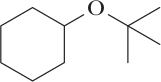

Reactions of Ethers
Ethers resemble hydrocarbons in their resistance to chemical reaction. They do not react with oxidizing agents such as potassium dichromate or potassium permanganate. They are stable toward even very strong bases, and, except for tertiary alkyl ethers, they are not affected by most weak acids at moderate temperatures. Because of their good solubilizing properties and general inertness to chemical reaction, ethers are excellent solvents in which to carry out many organic reactions.
Acid-Catalyzed Cleavage by Concentrated HX
Cleavage of dialkyl ethers requires both a strong acid and a good nucleophile, hence the use of concentrated aqueous HI (57%) or HBr (48%). Dibutyl ether, for example, reacts with hot concentrated HBr to give two molecules of 1-bromobutane.
Mechanism Acid-Catalyzed Cleavage of a Dialkyl Ether
| CH3CH2CH2CH2—O—CH2CH2CH2CH3 Dibutyl ether | + 2HBr | heat ⟶ | 2CH3CH2CH2Br 1-Bromobutane | + H2O |
Concentrated HCl (38%) is far less effective in cleaving dialkyl ethers, primarily because Cl2 is a weaker nucleophile in water than either I2 or Br2. The mechanism of acid-catalyzed cleavage of dialkyl ethers depends on the nature of the carbons bonded to oxygen. If both carbons are primary, cleavage involves an SN2 reaction in which a halide ion is the nucleophile. Otherwise cleavage is by an SN1 reaction.
Mechanism Acid-Catalyzed Cleavage of a Dialkyl Ether
Step 1: Add a proton. Proton transfer from the acid catalyst to the oxygen atom of the ether gives an oxonium ion.
| CH3CH2—O—CH2CH3 | + H3O+ | fast and reversible ⟶ | CH3CH2—O+—CH2CH3 | + H2O |
Step 2: Make a new bond between a nucleophile and an electrophile and simultaneously break a bond to give stable molecules or ions. Nucleophilic displacement by halide ion on the primary carbon cleaves the C—O bond; the leaving group is CH3CH2OH, a weak base and a poor nucleophile.
|  | SN2 ⟶ | CH3CH2—Br | + H—O—CH2CH3 |
This cleavage produces one molecule of bromoalkane and one molecule of alcohol. In the presence of excess concentrated HBr, the alcohol is converted to a second molecule of bromoalkane by another SN2 process (Section 9.2).
Tertiary, allylic, and benzylic ethers are particularly susceptible to cleavage by acid, often under quite mild conditions. Tertiary butyl ethers, for example, are cleaved by aqueous HCl at room temperature. Proton transfer from the acid to the oxygen atom of the ether produces an oxonium ion, which then cleaves to produce a particularly stable 3°, allylic, or benzylic carbocation. Reaction of the carbocation with Cl– completes the reaction.
|  tert-Butyl cyclohexyl ether | + HCl | ⟶ |  | C+—(CH3) A 3° carbocation intermediate | SN1, Cl− ⟶ | Cl—C—(CH3) |